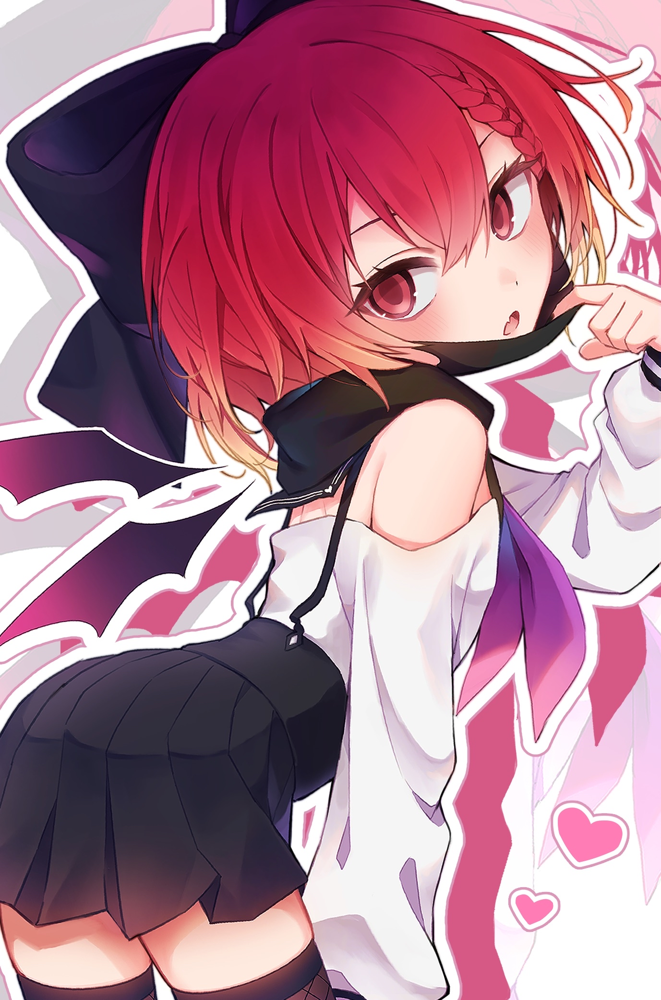
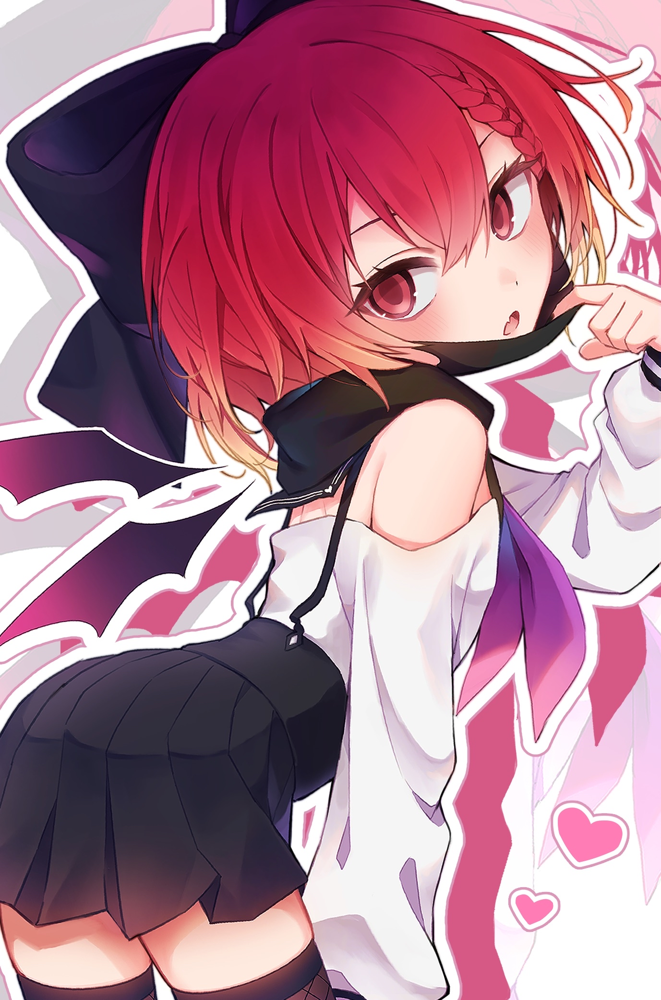

2007年2月7日に大分県で生まれる。Twitterやpixivのイラスト活動を中心に活動しており、イラストの傍らで楽曲制作や動画制作なども行っている。
 

活動アカウントのリンクです。
株式会社クリスタルロードのインターン経験（画像編集・レタッチなど）
小学館「ドラゴン娘になりたくないっ！」イラストコンテスト生徒会特別賞受賞
Vtuber「阿古町狐夢」ロゴデザイン・二周年イラスト
現在は週刊漫画ＴＩＭＥＳ（芳文社）で連載中「浪人生の彼女とスーパーで」の漫画家・ひろせみほのアシスタントとして線画、着色などを担当している。